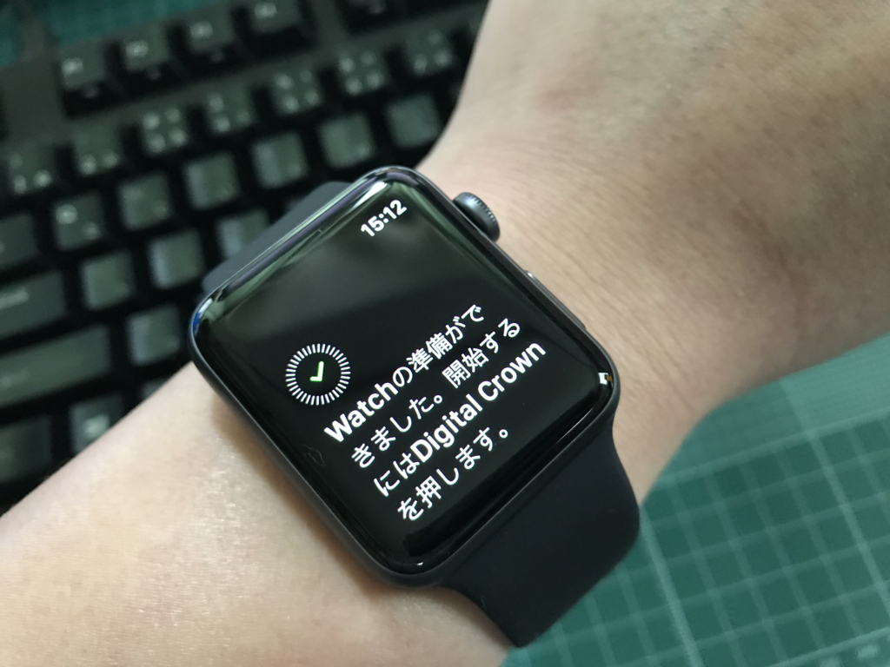
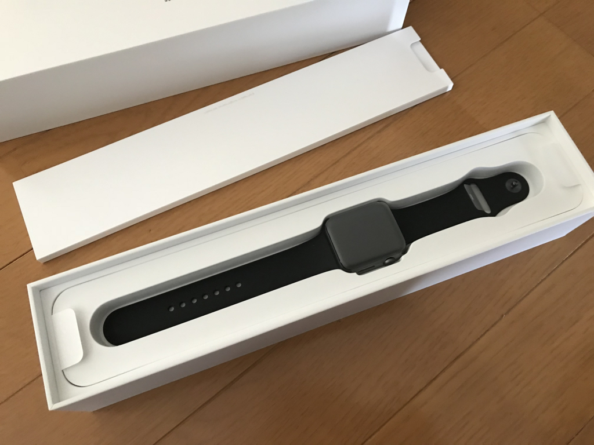
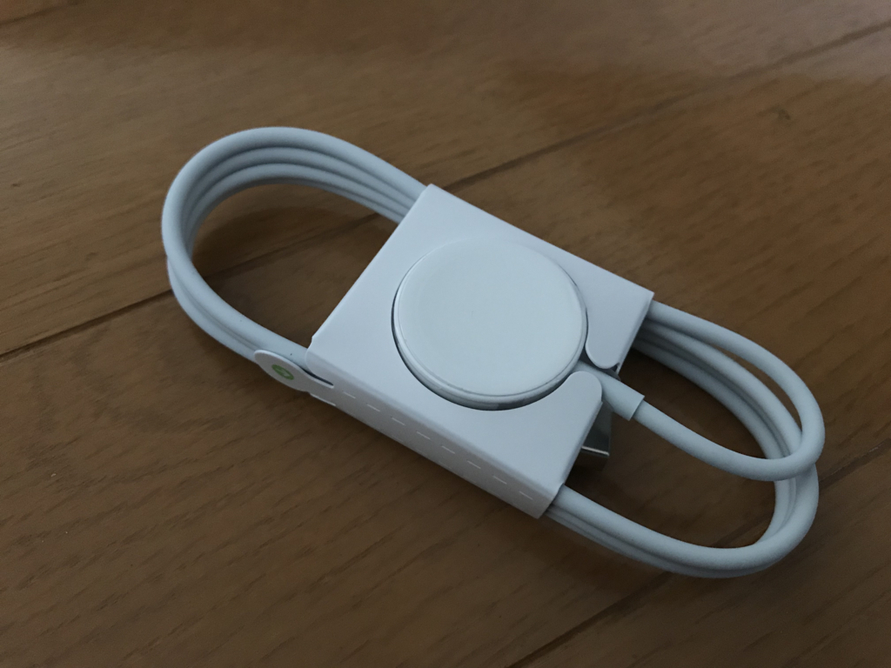
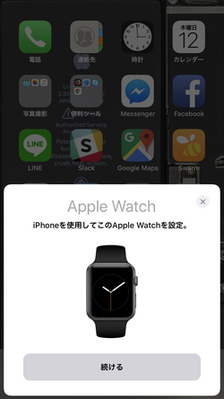
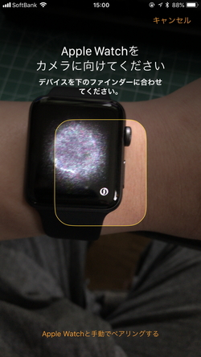
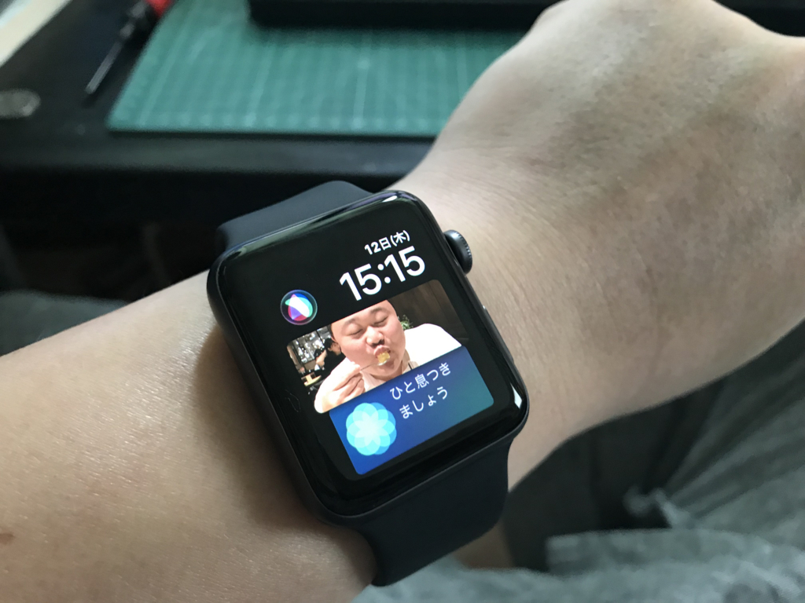

日記：Apple Watch を買った
執筆日時：
ぶっちゃけ腕時計にはまったく興味ないのだけど（カネ使うのもったいなく感じる……）、なんとなく着けとかなきゃねっていうときはある。そういうときはスマートウォッチがいいよな。テクノロジー的な面白さはあるから、それが着ける動機になる。
これまではそういう用途に Activité Pop を愛用していたのだけど、電池切れが面倒だな（← 買うときは自分で電池を交換できる点を評価してたくせにな！）と思い、着けなくやった。十分遊んで元はとったので、そろそろ新しいのがほしい……というわけで、自分への誕生日プレゼントがてら選んでみた。
候補は
- Sony wena wrist pro：バンド部分にイロイロ仕込んだスマートウォッチ。時計部分（ヘッド）は自由に取り換えられる
- Apple Watch：説明の必要はなさそうな Apple のスマートウォッチ
の2つ。個人的には wena wrist の方にだいぶ惹かれたのだけど、ほしいと思ったヘッドとバンドの組み合わせで約10万円すること（Apple Watch は4万円ぐらい）、日本企業のアプリのできをあんまり信用していないこと（Apple は OS でサポートされてるしな！）、Apple Watch の方がエコシステムが充実していることなどが決め手で、結局 Apple Watch をチョイスした。数年で陳腐化するモノにあんまりお金かけるのもつらいしね……。

どや！
それにしても Apple の”おもてなし”はすごいよな。SMS で出荷情報を逐一知らせてくれるし、あけたときのワクワク感もある。

時計なのになんでこんなにケースがデカくて長いんだって思ったけど、こうやってベルトを延ばした状態で目に入れたかったんだな。ちなみに、充電はマグネットっぽいパッド（？）にくっつけてやるらしい。へぇ……

でも、この点は wena wrist の方がかっこよかったかもね。あっちはクリップみたいなので挟むだけで充電できるっぽい。 まで、でも、Apple はマグネット大好きだしね、なかなか抜けられないよね。でも、専用のサードパーティ製充電ステーションが充実しているのは強みだね。充電器がピタリ収まるハンガーみたいなのとか……すっきり収納できそう。
んで、おもてなしの最たるは初回のセットアップ。めっちゃ簡単なんだな……。
 
iPhone さえあれば、Watch にでるなんか変な模様を写すだけでセットアップが終わる。iPhone がなけばどうなるんやってちょい思うけど、Watch 買うやつは iPhone もってるやろしな。
言い忘れたけど、Apple Watch には2種類のシリーズと大きさがあって、さらに携帯回線（Cellular）に対応してるやつ（スタンドアロンで動作する？）のと、そうじゃないのがあるっぽい。
- Apple Watch Series 1：GPS、気圧高度計、Siri なし。旧モデルのリフレッシュ版
- 38mm or 42mm
- Apple Watch Series 3：現行モデル
- GPS モデル
- 38mm or 42mm
- GPS＋Cellular モデル
- 38mm or 42mm
- GPS モデル
自分が買ったのは Apple Watch Series 3 の GPS モデル（42mm）。母艦となる iPhone は常に持つし、単体で電話を掛けたいというケースもないので、Cellular モデルは要らないと思った。ジョギングが趣味で要らないモノをもちたくないとか、とりあえず全部要りじゃないと気が済まないとかじゃなけりゃ、これが一番いい気がする。
使い方はまだあんまりわかってないんだけど、とりあえず思ったこと。
- いちいちロックを解除しなきゃいけないのはめんどくさいなーと思った。Touch ID っぽい仕組みがないと厳しくないか。
- でも、手首に巻いていれば認証が継続するのは面白いかも。
- 手首をひねって文字盤をみようとするときだけモニターに電源が入るのは賢いと思った。加速度センサーか何かを使ってるんだろうけど、確かにそうしないと電池もたないよなーって思う。
- 文字盤をカスタマイズするのは結構楽しい。でも、最初だけだと思う。
- 通知が手首に来るのはたいして便利だと感じない。でも、iPhone をポケットから出さずに、時計だけで Foursquare/Swarm のチェックインができたときはちょっといい気分になった。
- 音楽のコントロールはやりにくい……うちのヘッドフォンには再生コントロールがついてるからそっちを使うだろう。ってことは、ヘッドフォンは時計ではなくスマホに接続しておいた方がいいのか？
- タッチはしんどいけど、竜頭をくりくり回して操作するのは楽しい。くりくり。
- いちいち深呼吸しろって言ってくるのはクソうざいから、速攻切った。アプリは消せないのか？
- 設定を同期して最初の文字盤がひどかった

とりあえず、わいの Apple Watch 初体験を台無しにした友人には Facebook 経由で八つ当たりしておいた。
まだ3日ぐらいしか使ってないので、最終的は判断を下すには時期尚早だけど、Apple Watch は必要なデバイスってわけじゃないと感じた。iPhone があれば十分で、無理して買う必要はないな。でも、アクティビティロガーとしてはちょっと期待している。Apple Pay は……とりあえず使ってみるけど、そんなに期待していないかも。腕をぐねってやんないとタッチできなくね？ みんなどうやってるんだろうな。その点、wena wrist は手首ひねらなくても自然にタッチできると思うし、時計兼お財布を考えているんだったら他のソリューションの方が適してるような気がする。